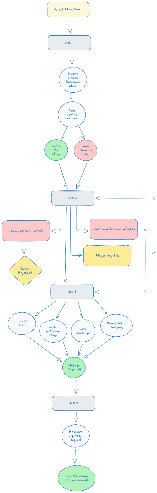

Quest Fantasy
"Become the reluctant savior of a dying village or the catalyst of its downfall."
Design Pillars
- Consequences That Echo — every choice returns later in emotional or mechanical form.
- Fear Through Uncertainty — infection, distrust, and ambiguity build tension.
- Moral Pressure — push the player into uncomfortable decisions without forcing a “good path.”
Target Emotions
- Urgency — villagers are dying as time passes.
- Dread — environmental cues and unpredictable NPC reactions.
- Responsibility — the cure depends on player action.
- Paranoia — hostility shifts based on past choices.
Characters
Village Chief
Desperate authority
Desperate authority
Village Elder
Cynical, pragmatic
Cynical, pragmatic
Alchemist
Knowledge-focused, anxious
Knowledge-focused, anxious
Professor
Comic relief, lab scenes
Comic relief, lab scenes
Systemic Hooks
- Infection debuff modifies screen effects + animations.
- Village hostility changes based on player dialogue history.
- Inventory puzzle linked to herbs, feathers, and cure materials.
- Escape sequence uses area hazards and collapsing cave triggers.
Flowchart (preview)

Why This Quest Works in a Horror Context
- Uses moral dilemmas instead of cheap jump scares.
- Hostile villagers become unpredictable human threats.
- Resource tension through infection + cure crafting.
- Environmental hazards reinforcing vulnerability.
- Emotional stakes increase dread organically.

Quest Design Document (PDF Preview)
Endings Overview
- Village Saved — cure succeeds; villagers remember your choices.
- Bittersweet Survival — incomplete cure; several villagers die.
- Village Collapse — cure abandoned or misused; total failure.
- Player Death — infection overtakes the player.
Implementation Notes
- Quest state machine handles infection, hostility, and cure progression.
- Branching dialogue uses Boolean flags for major player decisions.
- Combat triggers only after hostility threshold is reached.
- Environmental hazards controlled through collision volumes.
- Blueprint scripting recommended for real-time village state updates.
Design Takeaways
- Branching must remain tightly scoped to avoid narrative overload.
- NPC morality works best when directly reflecting player choice.
- Infection mechanics enhance tension when tied to pacing.
- Refusal paths must remain engaging to preserve agency.
- Clear documentation ensures smooth team integration.